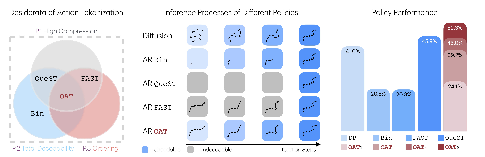

Ordered Action Tokenization
Ordered action tokens for autoregressive robot policies: compact enough to generate, always decodable, and ordered so prefixes are useful.
RSS 2026 accepted paper, expanded from the original Article with native web controls.
1Harvard University · 2Stanford University

Action tokenization defines the policy's prediction problem.
An autoregressive robot policy does not directly predict continuous control. It predicts tokens for a short future sequence of robot actions, or action chunk, then trusts the detokenizer to recover executable continuous control. That makes tokenization a learning problem: a representation can reconstruct well and still be slow, invalid under sampling, or difficult to predict left-to-right.
- The problem: existing tokenizers expose a three-way tension between compression, total decodability, and autoregressive predictability.
- The method: OAT learns ordered discrete register tokens and trains every prefix to decode into a complete action chunk.
- The result: token count becomes a runtime budget: fewer tokens for low-latency coarse control, more tokens when the task needs precision.
1. The tokenizer defines what the policy has to predict.
Discrete action tokens are becoming an increasingly important design choice in modern robot learning systems: RDT-2 employs vector-quantized (VQ) action tokens for its stage-1 training; TRI's LBM/VLA leverages FAST and VQ-style tokenizations; and the winning solution of the BEHAVIOR 2025 Challenge integrated FAST tokens in training and inference.
In all of these systems, the policy sees symbols before it sees control. The tokenizer determines sequence length, the set of samples that can be decoded safely, and the left-to-right structure the model must learn. It is not a preprocessing detail; it is the prediction problem.
2. Reconstruction error is not enough.
Classical theories like the rate-distortion tradeoff focus on balancing compression rate and reconstruction fidelity. For generative robot policies, we argue that a third axis, modelability, is crucial and often overlooked: how difficult it is for a generative model to capture the distribution of a representation. Poorly structured representations may be compact and accurate, yet fundamentally hard to model.
This is the central distinction: a tokenizer can reconstruct actions well and still be poor for policy learning. If the token stream has low autoregressive modelability, or is sparse and high-entropy, the model pays that cost at every next-token prediction step.
Shorter action codes reduce autoregressive depth and latency.
Continuous robot control still needs enough precision for contact-rich execution.
Token order should make next-token prediction easier, not merely possible.
For robot control, the tokenizer is useful only if the downstream policy can reliably model its tokens. Low reconstruction error matters, but it does not guarantee a token sequence with stable left-to-right structure.
3. A useful action tokenizer must be compact, total, and ordered.
The design target is not a single metric. An action tokenizer for autoregressive policies has to satisfy three requirements at the same time:
- (P.1) Reasonable compression. The representation should compress action chunks enough to enable efficient sequence modeling, but not so aggressively that too much information is lost.
- (P.2) Total decodability. The detokenization mapping should be a well-defined total function: every token sequence in the discrete token space must decode to a valid action chunk. This is essential because policies may generate arbitrary token sequences at inference time. If decoding is only partially defined, invalid tokens can lead to undefined behavior or catastrophic failures during execution.
- (P.3) Predictive ordering. Token sequences should admit a meaningful left-to-right causal structure aligned with next-token prediction. This structure is critical for modelability, allowing autoregressive models to learn stable, predictable token dynamics.
Where does each tokenizer give up?
Select a tokenizer family and read it against the three requirements: compression, total decodability, and autoregressive modelability.
Binning is universally decodable but produces long, flat token sequences that are hard for autoregressive policies to model efficiently.
4. Prior tokenizers each give up one requirement.
Before OAT, each major tokenizer family misses the target in a different way. The OAT row shows the design point we want: compact, total, and ordered.
Every generated token decodes, but the policy must generate hundreds of flat dimension-time tokens.
The frequency structure helps next-token prediction, but arbitrary BPE sequences may not decode.
A neural decoder makes outputs valid, but the token sequence has weak autoregressive modelability.
Tokens are learned as a progressive sequence, so early predictions carry coarse motion structure.
Binning. The most common scheme is per-dimension, per-timestamp binning. While simple, it scales poorly: long horizons and high-dimensional actions can produce hundreds of tokens per chunk, dramatically slowing training and inference and increasing latency. More importantly, such long, flat sequences have poor modelability across dimensions: knowing the earlier coordinates at a timestep offers little help in predicting the next one, making binning poorly aligned with autoregressive generation.
Frequency-domain transform. Frequency-based methods such as FAST achieve high information density (P.1) and impose a low-to-high frequency structure (P.3), where early tokens capture global trajectory structure and later tokens refine details. However, FAST violates P.2 (total decodability). Because Byte Pair Encoding (BPE) produces variable-length sequences, arbitrary token sequences may not decode into a valid fixed-size frequency representation, leading to undefined behavior and runtime failures. See the paper appendix and the discussion on Hugging Face for further details.
Vanilla Latents. Learned encoder-decoder latent tokenizers can achieve strong compression (P.1), and neural decoders ensure total decodability (P.2). However, the resulting token spaces often have weak autoregressive modelability: the token positions do not provide a stable left-to-right structure for next-token prediction. This makes them poorly aligned with policies that rely on meaningful left-to-right structure (P.3) for stable generation.
The gap is not that prior tokenizers are weak in every way. It is that none simultaneously make the sequence short, make the whole token space executable, and give the policy an easy left-to-right prediction problem.
5. OAT learns ordered registers that decode from any prefix.
OAT is a learned tokenizer for action chunks. It writes each chunk into a fixed set of register latents, discretizes those registers with finite scalar quantization (FSQ), and decodes generated tokens back into continuous control. The key design choice is order: register attention is causal, and nested dropout trains the decoder to reconstruct from partial prefixes.
- Summarize the action chunk. A transformer encoder reads the continuous action sequence and writes the important temporal information into a fixed set of register tokens.
- Discretize the registers. Finite scalar quantization turns the register latents into discrete tokens that an autoregressive policy can predict.
- Force a left-to-right structure. Causal attention makes later registers depend on earlier registers, aligning the representation with next-token generation.
- Train with missing tails. Nested dropout randomly masks later tokens during tokenizer training, so early tokens must carry the highest-priority information.
- Decode back to control. A conditional decoder maps the generated token prefix back into a continuous action chunk for execution.

6. Ordered tokens turn action coding into progressive refinement.
The ordering induced by OAT admits a natural interpretation through information theory. Shannon showed that the optimal code length for an event scales with the negative logarithm of its probability, so frequent patterns require fewer bits, while rare events demand more representational capacity. Action chunks follow a similarly skewed distribution: most trajectories share common coarse structure, whereas fine-grained deviations occur infrequently.
From this perspective, OAT learns a progressive code. Early tokens capture high-probability, globally shared motion patterns; later tokens encode increasingly rare residual details. Nested dropout makes this pressure explicit: every short prefix has to reconstruct the action, so information is allocated in decreasing order of usefulness.
The first token is not an arbitrary latent slot; it is trained to carry the highest-priority control information.
Additional tokens reduce residual error instead of replacing the action represented by the prefix.
7. Every prefix is an executable action budget.
Because OAT trains the decoder on masked suffixes, a policy does not have to finish the token sequence before acting. A prefix can be padded, detokenized, and executed as a complete action chunk. In practice, token count becomes a runtime budget: one or two tokens for fast coarse control, more tokens when the task needs precision.
Stop early, keep the action valid.
OAT makes every prefix executable. More tokens refine the trajectory, but the policy can stop early when latency matters.
One token decodes a complete action chunk, but the reconstruction is coarse and visibly offset from the ground truth.
Each prefix decodes to a complete action chunk. Green points are ground-truth waypoints; red points are the full chunk reconstructed from the selected prefix. More prefix tokens reduce the red-green error and increase fine-grained fidelity.
8. OAT improves success, latency, and real execution.
We evaluate OAT across more than 20 tasks spanning four simulation benchmarks (LIBERO, RoboMimic, MetaWorld, and RoboCasa) and real-world robot execution. The experiments test whether ordered prefixes are only a nice representation, or whether they produce better closed-loop policies.
OAT8 is best in every reported success column.
OAT1, OAT2, and OAT4 reduce sequential depth while preserving valid decoding.
The ordering ablation drops below OAT4 and OAT8, showing that causal registers and nested dropout do real policy work.
Full OAT wins across simulation and real tasks.
OAT8 achieves the best reported success in every simulation benchmark and both real-world tasks, while preserving the prefix execution option unavailable to fixed tokenizers.
| Policy | LIBERO | RoboMimic | MetaWorld | RoboCasa | PnP Ball | Stack Cups |
|---|---|---|---|---|---|---|
| DP | 36.6 | 67.1 | 19.3 | 54.0 | 14/20 | 11/20 |
| Bin | 14.4 | 39.5 | 14.5 | 27.7 | 4/20 | 8/20 |
| FAST | 23.0 | 24.0 | 7.1 | 13.2 | 8/20 | 6/20 |
| QueST | 48.2 | 66.9 | 17.9 | 52.3 | 11/20 | 8/20 |
| OAT1 | 11.7 | 50.8 | 11.3 | 47.7 | 7/20 | 3/20 |
| OAT2 | 39.8 | 52.5 | 16.4 | 50.3 | 11/20 | 9/20 |
| OAT4 | 46.4 | 65.3 | 19.5 | 51.7 | 13/20 | 12/20 |
| OAT8 | 56.3 | 73.1 | 24.4 | 54.6 | 16/20 | 16/20 |
Full OAT matches QueST's eight-token latency, but shorter prefixes are much faster.
With full decoding, OAT and QueST have comparable autoregressive depth. The difference is that OAT can stop at one, two, or four tokens when latency matters.
| Policy | LIBERO | RoboMimic | MetaWorld | RoboCasa | ||||
|---|---|---|---|---|---|---|---|---|
| #Tok. | Lat. | #Tok. | Lat. | #Tok. | Lat. | #Tok. | Lat. | |
| DP | × | 42.0 | × | 38.1 | × | 37.7 | × | 35.3 |
| Bin | 224 | 517.2 | 224 | 509.5 | 128 | 306.6 | 384 | 888.3 |
| FAST | 44.2 | 114.4 | 53.1 | 142.0 | 49.8 | 129.7 | 69.7 | 166.1 |
| QueST | 8 | 27.1 | 8 | 29.6 | 8 | 31.4 | 8 | 30.2 |
| OAT1 | 1 | 10.5 | 1 | 11.3 | 1 | 15.5 | 1 | 13.5 |
| OAT2 | 2 | 13.2 | 2 | 15.3 | 2 | 17.9 | 2 | 15.8 |
| OAT4 | 4 | 17.4 | 4 | 18.4 | 4 | 22.1 | 4 | 19.8 |
| OAT8 | 8 | 27.4 | 8 | 29.9 | 8 | 31.3 | 8 | 30.0 |
Ordering is doing the policy work.
Across the four simulation benchmarks, removing the ordering-inducing objective causes a consistent degradation. OAT× is significantly worse than OAT4 and OAT8, and in some cases falls below QueST.
| Policy | LIBERO | RoboMimic | MetaWorld | RoboCasa |
|---|---|---|---|---|
| QueST | 48.2 | 66.9 | 17.9 | 52.3 |
| OAT1 | 11.7 | 50.8 | 11.3 | 47.7 |
| OAT2 | 39.8 | 52.5 | 16.4 | 50.3 |
| OAT4 | 46.4 | 65.3 | 19.5 | 51.7 |
| OAT8 | 56.3 | 73.1 | 24.4 | 54.6 |
| OAT× | 35.2 | 61.1 | 17.6 | 48.5 |
The same action becomes sharper as the prefix grows.
These MeshCat reconstructions show the mechanism behind the prefix budget: early tokens recover the coarse motion, while additional tokens refine the residual details. All trajectories are generated by the same tokenizer and decoder.
Real-world execution checks the same failure modes.
More than 90 real-world videos cover successful and failed attempts across tasks, tokenizers, and camera views. Reloading randomizes the initial configurations. FAST failures often expose the decodability issue: when sampled tokens cannot be decoded safely, the policy must halt instead of executing an undefined action.
DP
Video unavailable for this task.
Video unavailable for this task.
Bin
Video unavailable for this task.
Video unavailable for this task.
FAST
Video unavailable for this task.
Video unavailable for this task.
QueST
Video unavailable for this task.
Video unavailable for this task.
OAT1
Video unavailable for this task.
Video unavailable for this task.
OAT2
Video unavailable for this task.
Video unavailable for this task.
OAT4
Video unavailable for this task.
Video unavailable for this task.
OAT8
Video unavailable for this task.
Video unavailable for this task.
9. Token order turns representation design into a control decision.
OAT's central point is not that discrete tokens replace continuous controllers. It is that when robot policies use action tokens, token order becomes part of the control problem. Compactness, total decodability, and prefix modelability should be designed together; once they are, token count becomes a runtime budget instead of a fixed preprocessing choice.
This also changes the natural next question. In this work, autoregressive depth is fixed at deployment time. Future policies could decide depth online: simple motions may execute from short prefixes, while contact-rich steps may request more tokens before acting. That makes adaptive token budgets a concrete direction enabled by ordered, prefix-decodable action representations.
The follow-up Tokens in the Era of VLAs page takes up several of these questions directly: block-wise autoregressive generation, ordered-token supervision for VLA cotraining, and hybrid control where a continuous expert executes the final action.
Simple motions could execute from short prefixes, while contact-rich steps could request more tokens.
The policy could generate additional tokens only when uncertainty remains high or precision matters.
They can provide action-aware targets even when a continuous expert executes the final control.
Discrete action reasoning and diffusion or flow decoders do not need to be competing choices.
Appendix
@misc{liu2026oatorderedactiontokenization,
title={OAT: Ordered Action Tokenization},
author={Chaoqi Liu and Xiaoshen Han and Jiawei Gao and Yue Zhao and Haonan Chen and Yilun Du},
year={2026},
eprint={2602.04215},
archivePrefix={arXiv},
primaryClass={cs.RO},
url={https://arxiv.org/abs/2602.04215},
}